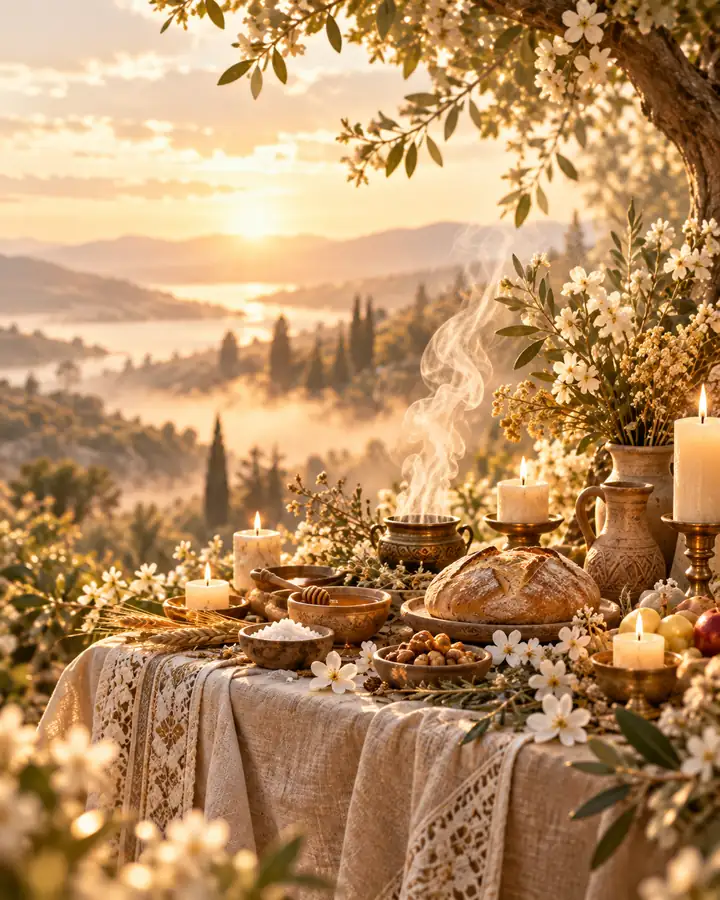

О ФОРМАТЕ
Сначала смысл — потом ритуал
Практика не проводится автоматически по заявке. Сначала обсуждается намерение, контекст, пространство и границы участия. Только после этого принимается решение о самой церемонии.

Персонально согласованная церемониальная практика, в которой важны уважение, память, благодарность и бережная работа с темой предков.
Практика не проводится автоматически по заявке. Сначала обсуждается намерение, контекст, пространство и границы участия. Только после этого принимается решение о самой церемонии.
Светлый ритуальный формат для тех, кому близка тема предков и важно прожить её уважительно и осознанно.